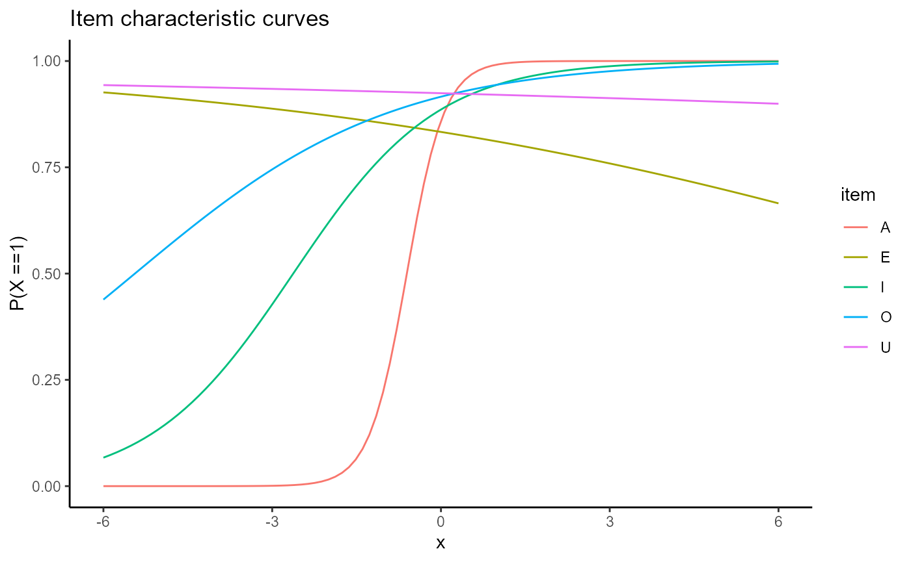
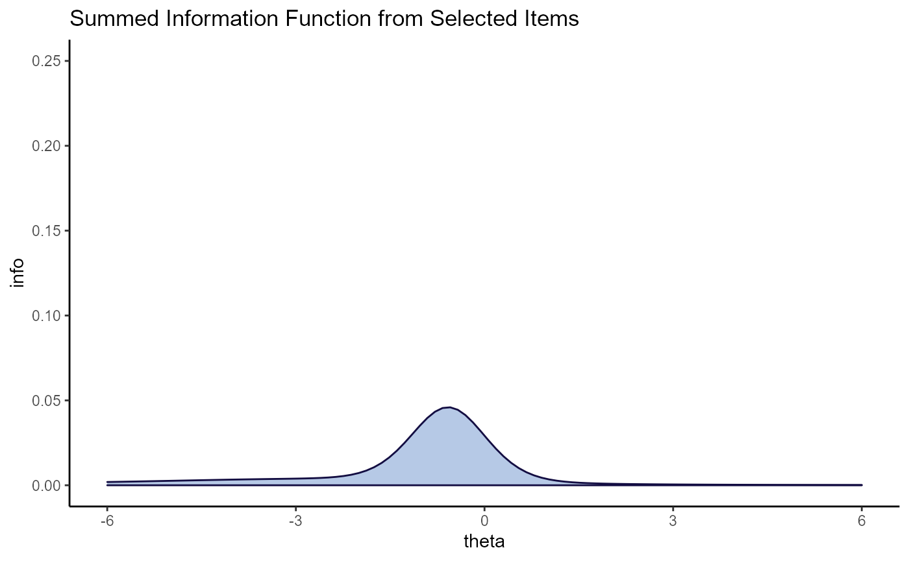
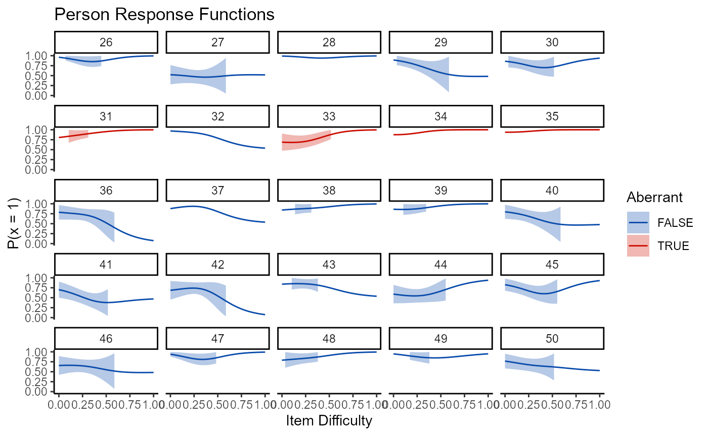

wizirt Overview
Isaac Pfleger
11/3/2020
complete_vignette.RmdThis is a vignette walking through all that wizirt is capable of doing. This vignette is not intended to be read through from beginning to end, so much as it is intended to serve as a reference. wizirt can be installed from GitHub. I prefer to skip updates when installing from GitHub, I find it often leads to an error.
devtools::install_github('Pflegermeister/wizirt')
After installing wizirt, you need to load it to use it.
Data must be a persons by questions data frame or matrix, where the values of the data are dichotomous right/wrong, 1/0. There is a practice data set available in wizirt that can be called up using the data() function.
data("responses")
Using wizirt
wizirt includes a very useful function that runs almost all of the other functions found in wizirt. This is irt_report(). It can be used to create a general report based on the data given to it. The irt_report() function has many arguments that are based on the functions in wizirt (since irt_report() combines them). These arguments include the data, report_type (only html is available right now), title, author, note, engine, and rownames. Other arguments can be found in the documentation (?irt_report).
irt_report(data = responses[,-1], rownames = responses[,1], title = "My Title", author = "Myself, I.", note = "A note", item_type = "Rasch")
Notice that the responses are included in the data argument and the examinee ids are included in the rownames argument. An example of the output from this report is available online at https://isaacpfleger.com/resources/dissertation/example_report.html.
The irt_report() function is designed for convenience and to gradually break in the new R user. For those who are more familiar with R, there are a series of functions that provide greater access to the capabilities of wizirt. The simplest wizirt model can be specified simply by passing data to the function wizirt.
mod <- wizirt(data = responses[,-1])
By default the wizirt function runs a Rasch model using the mirt package. However, you can change the model with the item_type argument. Rasch, 1PL, 2PL, and 3PL are available for item_type. Likewise, the package doing the estimation can be changed with the engine argument. Possible engines include mirt, ltm, and eRm.
mod2 <- wizirt(data = responses[,-1], rownames = data[,1], item_type = "2PL", engine = "mirt")
To access the information inside of wizirt, use the print method with the type argument. Options for printing include descriptive statistics (‘desc’), technical information (‘tech’), missing data information from the perspective of the items (‘na_items’), missing data from the perspective of the persons (‘na_persons’), and the estimates for person and item parameters (‘person’ and ‘item’ respectively). For space reasons, I won’t show each of these here, but this is an example of how to use the print function with the type argument.
To get the other information, switch ‘tech’ with any of the other options (‘desc’, ‘na_items’, ‘na_persons’, ‘item’, ‘person’). After estimating two models like we have done here, it is possible to compare them using the anova() function, though I would make sure that the engines are the same before comparing. They use different methods for optimization, so the log-likelihoods may not be comparable.
Checking Assumptions
After estimation it is possible to test the assumptions of the model, (a) unidimensionality, (b) local dependence, and (c) fit to the functional form. A single function is used to gather the necessary information to address these measures, irt_assume().
assumptions <- irt_assume(mod)
The information needed to address the assumptions of unidimensional IRT is extracted using the print function. This time the type arguments are “unid” for unidimensionality, “ld” for local dependence, “rel” for relative fit, and “abs” for absolute fit. Relative and absolute fit are used to address the fit to the functional from assumption. Absolute fit is currently only available when the mirt engine is used.
Essential unidimensionality is checked using the sirt function conf.detect. The evaluations based on the cutoffs are included in the output, but more technical information is available in the help documentation for sirt::conf.detect().
Local dependence uses a combination of the standardized LD statistic as calculated by mirt::residuals-method(). The p-value is also included. The correlations (ccov) are from the ltm package with its ltm::rcor.test() function. The statistics are calculated for each pair of items, and the pairs are arranged by decreasing values of the standardized LD. There is a plot method for assessing local dependence as well. I will forgo the print method and only show the plot method for the purposes of space.
plot(mod, type = "ld_pairs")
Notice that the plot method is run on the orignial mod object and not the assumptions object. The type options that relate to local dependence are “ld” and “ld_pairs”. The type “ld” shows boxplots of the standardized LD for each item. The “ld_pairs” shows which items have been flagged as significant by the p-value associated with the item pairs (\(\alpha\) = .05).
In addition to printing the assumption object with type = “rel” or type = “abs”, model fit to the functional form can be tested at the item and person level. The topic of testing for model fit will be brought up again when discussing persons and items, though we leave it for a moment and turn toward plots.
There are a handful of plots that summarize information about the test generally. These are all accessed using the plot() function and the type argument. The type options that are related to summarizing the test are “tinfo”, “SE”, “tinfo SE”, “theta SE”, “theta”, “diff”, and “theta_diff”.
plot(mod2, type = "tinfo")
Item-level Statistics
Previously, we saw that it is possible to get item-level statistics using the pring function and setting type = “item”. But there is more item-level information available through plot() and through irt_item_fit().
There are more plot methods that relate to the items than there are for the test generally or for person-level statistics. These are obtained using plot() in combination with one or more types. The types can be “obs”, “trace”, “resid”, “stand”, or “info”. But these do not need to be run separately. Instead, any combination of these can be included the type argument, and they will be overlayed. For example, type = “resid trace” can be used to help diagnose item-level misfit. The quads argument can be used to increase the number of quadratures (or bins) that are used to create the residuals.
plot(mod2, type = "resid trace", quads = 15)
Users may prefer to see all of the items in a single plot, the items superimposed on each other. This can be accomplished passing FALSE to the facets argument.
plot(mod2, type = "trace", facets = FALSE)
Perhaps there are many items in the data set, and the plots come out squished. Users can pass a selection of items to the items argument. This can be either as the numeric positions of the items in the data set or as the names of the items as found in the data.
plot(mod2, type = "trace", facets = FALSE, items = 1:5)
Combining with other code, we can subset the items based on some characteristic. For example, maybe we only want to plot the items with a negative slope. The which function is used to give us the position of the TRUE values in a vector of logical T/F values. We use this to get the positions of the items that that have discriminations less than 0.
selection <- which(mod2$fit$parameters$coefficients$discrimination < 0) plot(mod2, type = "trace", facets = FALSE, items = selection)

This process of selecting items applies to all plots, including the ones for the test information generally.
plot(mod2, type = "tinfo", items = selection)

While the plots focus on information from the estimated model, it is also possible to gather statistics related to item-level fit. This is done using the irt_item_fit() function, which includes the argument stats. The stats argument refers to item-level fit statistics. These are calculated using mirt::itemfit(). Options available include ‘Zh’, ‘X2’, ‘G2’, or ‘infit’. Note that this is note a complete selection of what is available in mirt. Other item fit statistics will become availalbe at a future date. More information on the calculation of these measures is available in the documentation for mirt::itemfit().
ifa <- irt_item_fit(mod, stats = "Zh") print(ifa) %>% reactable()
Person-level Statistics
Working with person-level statistics is very similar to working with item-level statistics. For example, there is an irt_person_fit() function that provides a number of person-fit statistics. These are obtained from the PerFit package. Options for the stats argument in irt_person_fit() are ‘lz’, ‘lzstar’, ‘NCI’, ‘E.KB’, ‘D.KB’, ‘A.KB’, ‘Ht’, ‘ZU3’, ‘U3’, ‘Cstar’, ‘C.Sato’, or ‘G’. The default is ‘Ht’. Cutoffs are created from PerFit::cutoff(). Users are directed to the documentation of PerFit for further information regarding these statistics or the way cutoffs are created.
Additional statistics are available for Rasch models from sirt::personfit.stat(), though cutoffs are not created for these. These extra stats are “caution”, “depend”, “ECI1”, “ECI2”, “ECI3”, “ECI4”, “ECI5”, “ECI6”, “l0”, “infit”, “rpbis”, and “rpbis.itemdiff”. The stat option “infit” will calculate both infit and outfit.
pfa <- irt_person_fit(mod2, stats = "Ht")
There is less available to person statistics in terms of plots. Right now, the only plot is the nonparametric persons response function, which is produced by setting the type argument to ‘np_prf’ in the plot function. Because there are frequently too many persons to be included in a single plot and to still have it be visible, a plot_wrap function is included that works with item and person plots.
plot_wrap(mod2, type = "np_prf", persons_per = 25, pfa = pfa)
## [[1]]##
## [[2]]
##
## [[3]]
Alternatively, all persons can be plotted together by turning facets to FALSE.
plot(mod2, type = "np_prf", facets = FALSE, pfa = pfa)
Individuals may be interested in only plotting those who are flagged as aberrant. This can be done with the persons argument, similar to how the which function was used in conjunction with the items argument to plot only items with negative discrimination.
selection <- which(pfa$person_estimates$flagged) plot(mod2, type = "np_prf", facets = FALSE, pfa = pfa, persons = selection)
Person-fit in wizirt does not end there. The conception of wizirt was in the realization that software for person-fit assessment (PFA) are inconveniently separated from software for estimation. With this in mind, the first four steps of Rupp’s (2013) framework for PFA are facilitated by wizirt. Already, global detection and graphical exploration have been shown. Currently wizirt doesn’t include statistics for local misfit detection, but tabulation of response patterns and quantitative exploration are available.
To show the person-fit statistics, ability estimates, and response patterns, use the print() function with the patterns = TRUE argument. The argument item_order = “by_diff” is also useful. The default is to print the items in the order tehy appear in the dataset.
Alternatively, item_order can be a character or numeric vector of item names or positions. This can be less than the total number of items for a subset pattern.
Modeling reasons for person-fit can also be done using the irt_model_pfa() function. This uses the Conijn et al (xxxx) multi-level method. The data are randomly divided into a certain number of bins (specified by the bins argument). Then person fit statistics are calculated on each of the bins, and a multilevel model is run. Here a list or data frame of predictors can be included. This data does not have any predictors, so I make a fake one to show how it works.
age <- round(runif(nrow(pfa$person_estimates), 17, 25)) pfa_mlm <- irt_model_pfa(mod2, pfa = pfa, predictors = list(age = age))
The ICC is a key statistic with this model. You get it simply by indexing the resultant object.
pfa_mlm$icc
## Ht
## ICC_adjusted 0.07221316
## ICC_conditional 0.06991728The other object within pfa_mlm is the multilevel model object returned from blme. To learn more about this object, check out the documentation for blme::blmer().
summary(pfa_mlm$models$Ht)
## Cov prior : ids ~ wishart(df = 3.5, scale = Inf, posterior.scale = cov, common.scale = TRUE)
## Prior dev : 3.8298
##
## Linear mixed model fit by REML ['blmerMod']
## Formula: Ht ~ (1 | ids) + .
## Data: mlm_data
##
## REML criterion at convergence: -546.5
##
## Scaled residuals:
## Min 1Q Median 3Q Max
## -2.8470 -0.7660 0.1517 0.7060 1.9430
##
## Random effects:
## Groups Name Variance Std.Dev.
## ids (Intercept) 0.0004933 0.02221
## Residual 0.0063381 0.07961
## Number of obs: 275, groups: ids, 75
##
## Fixed effects:
## Estimate Std. Error t value
## (Intercept) 0.0040527 0.0473161 0.086
## ids -0.0003875 0.0002585 -1.499
## ability -0.0132058 0.0071669 -1.843
## bin 0.0018374 0.0034167 0.538
## age -0.0001695 0.0022385 -0.076
##
## Correlation of Fixed Effects:
## (Intr) ids abilty bin
## ids -0.060
## ability -0.127 -0.194
## bin -0.239 0.003 0.071
## age -0.948 -0.153 0.179 0.027